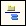
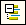
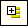
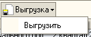

Форма «Регламентированная и финансовая отчетность» предназначена для работы с регламентированной отчетностью (бухгалтерской, налоговой, статистической и другой).
Форма состоит из двух основных частей.
В левой части формы расположен список видов отчетов.
В правой части формы расположен журнал отчетов.
Кнопки командной панели формы:
«Справочник отчетов» - вызывает справочник «Регламентированные отчеты»
«Настройка» – вызывает диалог для управления свойствами формы «Календарь бухгалтера» и общими свойствами регламентированных отчетов.
Список видов форм отчетности предназначен для ввода новых отчетов и установки отбора по видам отчетов в журнале отчетов.
Список заполняется по справочнику «Регламентированные отчеты»: в нем представлен только те виды форм регламентированной отчетности, которые доступны в справочнике. Если какая-либо форма отчетности в справочнике отсутствует или скрыта – она не будет доступна и в списке отчетов.
Список может быть представлен либо в виде дерева (при первом открытии формы это представление включается автоматически), либо в виде линейного списка. Переключение между этим представлениями выполняется кнопкой  («Иерархический просмотр») в командной панели списка видов отчетов.
При представлении списка отчетов в виде дерева на первом уровне дерева располагаются группы отчетов, а на втором – формы отчетности.
Названия групп и названия отчетов внутри групп в дереве расставлены так, как они расставлены в справочнике «Регламентированные отчеты». При изменении расположения отчетов в справочнике следует нажать кнопку («Обновить») для синхронизации справочника и списка отчетов.
Группы отчетов в дереве можно разворачивать и сворачивать, используя знаки «+» и «-» рядом с названием группы.
Кнопки командной панели  («Развернуть все узлы») и  («Свернуть все узлы») предназначены для развертывания или свертывания сразу всех групп дерева.
При представлении списка отчетов в виде линейного списка, отчеты в нем отсортированы по алфавиту и их положение не связано с сортировкой отчетов в справочнике «Регламентированные отчеты».
Представление в виде линейного списка удобно для быстрого поиска нужного отчета: при наборе на клавиатуре названия отчета курсор будет установлен на отчет, название которого начинается с набираемых символов.
Для поиска нужного отчета в списке также можно использовать режим контекстного поиска – по вхождению строки символов в название отчета. Это режим вызывается из меню «Правка» главного меню программы.
При установке курсора в списке отчетов на наименовании группы или название конкретного вида отчета, под списком отчетов выдается подробное описание выбранной формы отчетности.
Журнал отчетов содержит все созданные регламентированные отчеты. Колонки журнала отображают:
Внешний вид журнала отчетов можно менять, используя стандартные возможности настройки списка. Диалог для настройки списка можно вызвать из контекстного меню журнала отчетов.
Отчеты в журнале отчетов можно фильтровать по различным критериям:
Отборы по различным критериям можно устанавливать как независимо один от другого, так и одновременно. При одновременной установке нескольких отборов результатом будет являться список отчетов, удовлетворяющий сразу всем установленным критериям отбора.
Установка отбора по виду отчетов выполняется при помощи флажков, расположенных слева от наименований групп и видов форм отчетности в списке отчетов.
Флажки можно устанавливать и снимать в произвольном порядке. Для установки или снятия флажков сразу у всех отчетов списка служат кнопки («Пометить все») и («Снять пометки у всех») в командной панели списка отчетов.
Для установки отбора по организации необходимо выбрать наименование организации в поле под журналом отчетов.
Для снятии отбора следует очистить это поле, нажав кнопку «Х» справа от названия организации.
Для установки отбора по отчетному периоду необходимо установить флажок слева от текста «период» и выбрать требуемый период.
Период может быть выбран как фиксированный, так и произвольный.
Для выбора фиксированного периода следует выбрать переключатель «по итогам», указать отчетный год и при помощи ползунка указать период года – месяц или квартал. В журнал отчетов буду включены те отчеты, у которых с указанным периода отбора совпадает конец отчетного периода. Дата начала отчетного периода при этом во внимание не принимается. Например, при установке в качестве периода отбора «Ноябрь 2007 года» в журнале останутся отчеты за ноябрь 2007 года, а при установке периода «IV квартал 2007 года» в журнал будут включены отчет за декабрь, 4 квартал 2007 года и за 2007 год.
Для выбора произвольного периода следует выбрать переключатель «произвольный» и указать диапазон дат. В этом случае в отбор буду включены отчеты, у которых дата окончания отчетного периода попадает в указанны диапазон дат. Дата начала отчетного периода при этом в расчет не принимается.
Отбор по периоду можно отключить, сняв флажок слева от надписи «период».
Ввод нового отчета можно выполнить одним из следующих способов.
1) дважды щелкнуть мышью наименование вида отчета в списке или выделить наименование и нажать кнопку («Новый») в командной панели списка отчетов.
Если в журнале отчетов (с учетом установленных отборов) нет еще ни одного отчета выбранного вида, будет сразу открыта стартовая форма отчета.
Если отчеты выбранного вида уже есть в журнале (с учетом установленных отборов), тогда будет открыта форма списка таких ранее созданных отчетов. Для ввода нового отчета следует нажать кнопку («Новый») в нижней командной панели списка.
2) нажать кнопку («Новый») в командной панели журнала отчетов.
В результате этих действий будет открыта форма выбора вида отчета, в которой необходимо указать требуемый вид регламентированного отчета.
Открыть отчет для редактирования можно одним из следующих способов.
1) найти необходимый отчет в журнале отчетов и дважды щелкнуть мышью соответствующую строку журнала;
2) дважды щелкнуть мышью наименование вида отчета в списке отчетов.
Если отчеты выбранного вида уже есть в журнале (с учетом установленных отборов), тогда будет открыта форма списка таких ранее созданных отчетов. Необходимо найти требуемый отчет в выданном списке и нажать кнопку «ОК».
Журнал отчетов позволяет выполнить выгрузку данных отчета в электронном виде, не открывая сам отчет. Эта функция доступна только для тех форм отчетности, которые имеют возможность выгрузки данных в XML.
Для выполнения выгрузки следует выбрать требуемый отчет в журнале отчетов и нажать кнопку  («Сформировать электронное представление отчета и сохранить в файл») в командной панели журнала отчетов.
После нажатия этой кнопки требуется указать каталог для выгрузки, в котором будет сохранен выгруженный файл. Затем будет выполняться формирование электронного представления отчета в виде XML-файла.
При обнаружении в данных отчета ошибок, препятствующих выполнению выгрузки, выгрузка будет прекращена. В этом случае следует исправить обнаруженные ошибки и повторить выгрузку.
Журнал отчетов позволяет выгружать отчеты в групповом режиме. Для этого необходимо нажать кнопку («Групповой режим работы со списком отчетов») и отметить необходимые отчеты для выгруки в XML. При групповом режиме выгрузки отчетов в каталоге выгрузки создаются выгруженные файлы, имена для которых задаются согласно следующему правилу: "номер документа регламентированного отчета "+"номер формы "."расширение файла выгрузки". Если выгрузка была выполнена успешно, то на экран будет выдано сообщение пользователю о том, под какими именами были сохранены файлы выгрузки для отчетов.